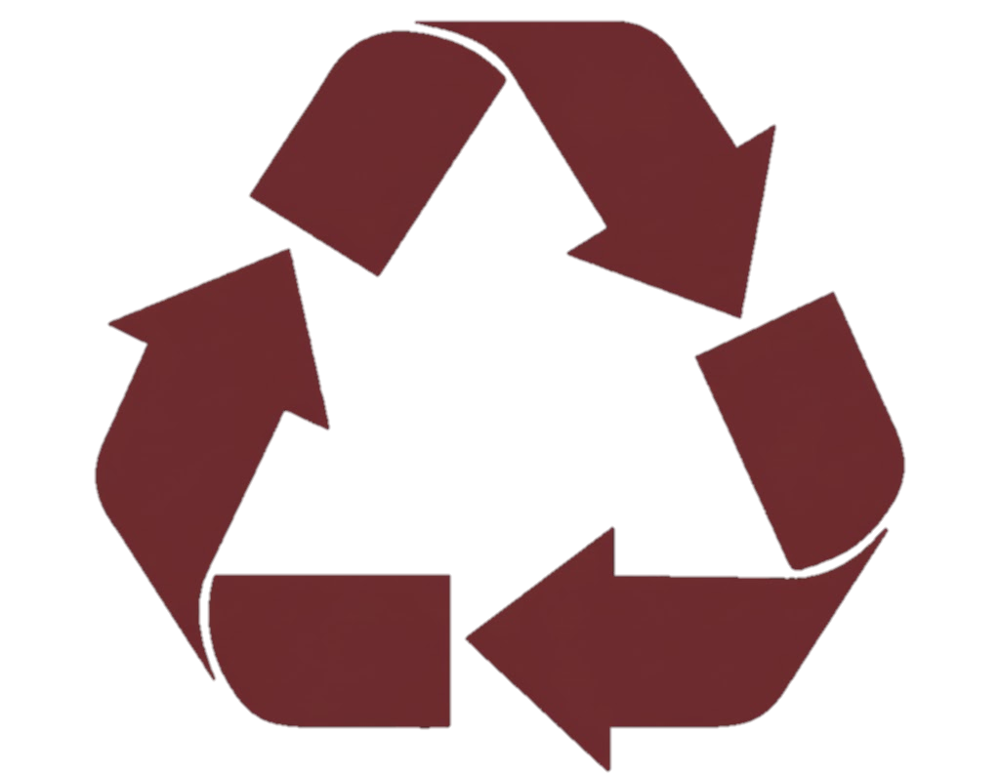

SOBRE NÓS
Conheça nossa missão, nosso impacto e nossas histórias.

Como nós impactamos positivamente?
Reutilizar livros ajuda o meio ambiente porque reduz o consumo de recursos naturais usados na produção de novos exemplares, como papel, água e energia. Ao compartilhar, doar ou comprar livros usados, evita-se o desmatamento, diminui-se a poluição gerada na fabricação e no transporte, e reduz-se a quantidade de lixo. Além disso, prolongar a vida útil dos livros incentiva o consumo consciente e a valorização da educação sustentável.
Inclusão de Colaboradores em Situação de Vulnerabilidade
A iniciativa também busca promover a inclusão social e profissional de colaboradores em situação de vulnerabilidade. Pessoas desempregadas, em situação de rua ou em condição de risco social podem ser envolvidas nas etapas de coleta, triagem, restauração e redistribuição dos livros. Além de gerar uma renda alternativa e digna, essa ação estimula o desenvolvimento de habilidades manuais, sociais e educacionais, contribuindo para a autonomia e reintegração dessas pessoas à sociedade. Dessa forma, o projeto não apenas ajuda o meio ambiente por meio da reutilização de materiais, mas também promove a responsabilidade social e a valorização humana, transformando vidas enquanto incentiva a leitura e a sustentabilidade.
Histórias de quem trabalha na restauração
Por trás de cada livro recuperado, existem pessoas que também estão reconstruindo suas próprias histórias. Muitos dos colaboradores envolvidos na restauração dos livros são pessoas que enfrentaram dificuldades como o desempreho, a falta de moradia ou a exclusão social. Ao participarem do projeto, esses trabalhadores encontram novas oportunidades de aprendizado e crescimento, redescobrem suas capacidades e passam a sentir orgulho de contribuir para algo maior. Cada exemplar restaurado simboliza uma segunda chance, tanto para o livro quanto para quem o recupera. Essas histórias inspiram a comunidade e mostram que a sustentabilidade também é sobre pessoas, solidariedade e transformação. O ato de restaurar livros torna-se, assim, um gesto de esperança e de valorização humana.
Gostou da nossa missão? Entre em contato e saiba como doar!